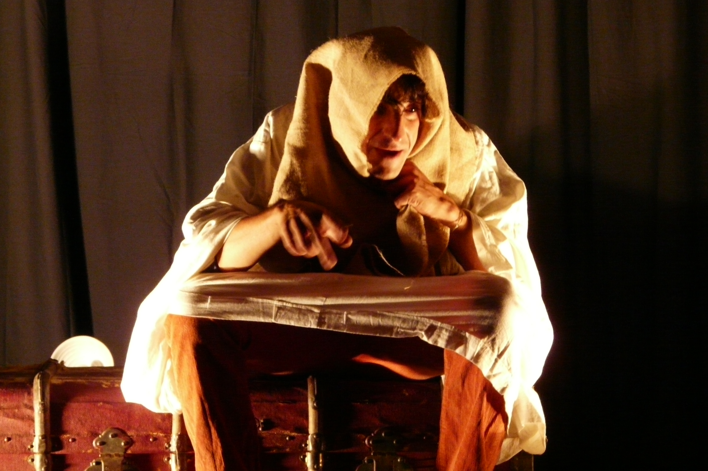
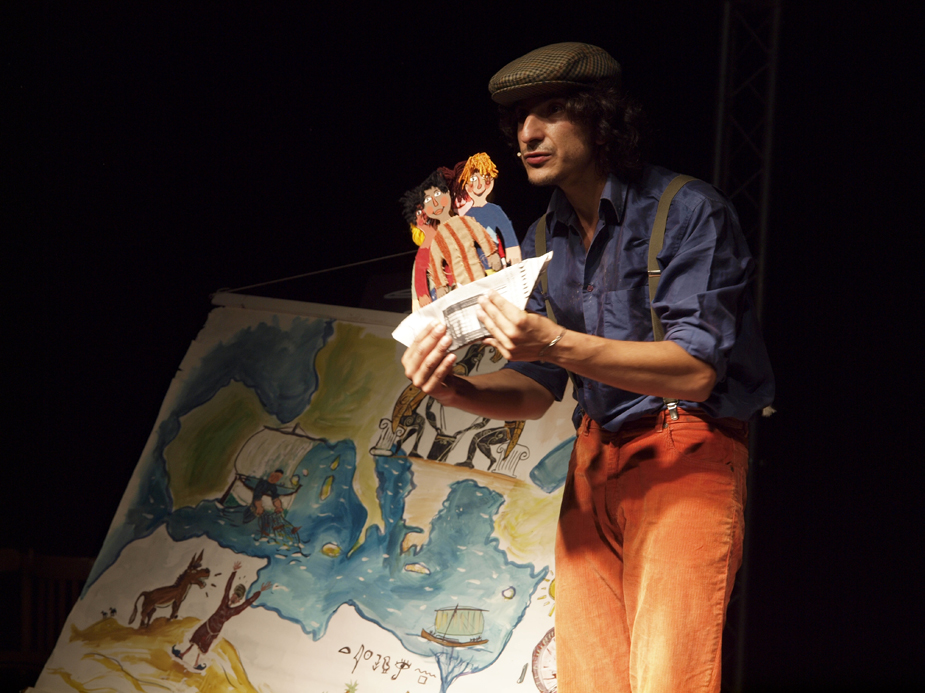
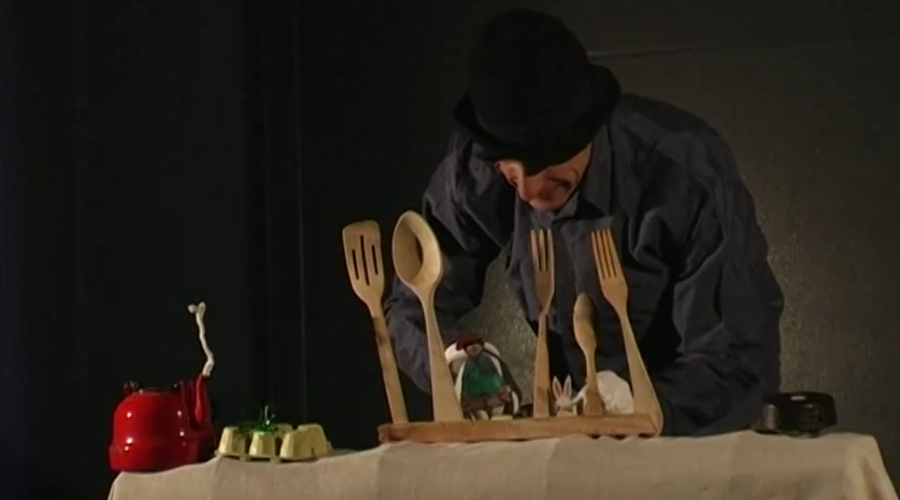
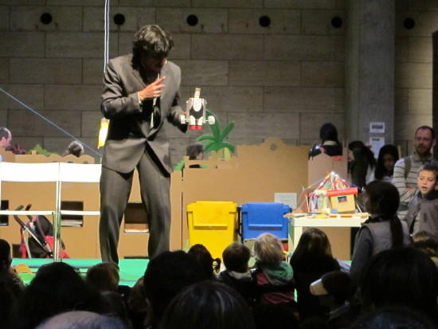

"És mentida o és veritat? És veritat i mentida.Descobreix els espectacles
És un conte ben contat, és un somni que pren vida."
"És mentida o és veritat? És veritat i mentida.Descobreix els espectacles
És un conte ben contat, és un somni que pren vida."
Narrador · Actor · Rondallaire
Qui soc
Roger Casadellà és un narrador i actor amb més de 20 anys d'experiència en l'art d'explicar històries. Apassionat per la paraula i el teatre, ha dedicat la seva vida a transportar petits i grans a mons plens de màgia i imaginació.
L'any 2001 va fundar Metromàtic Teatre, amb la qual va realitzar diversos espectacles i més de 400 funcions arreu de Catalunya. Amb La Muscària Teatre i posteriorment amb "Va de Nassoos", va explorar nous llenguatges escènics, incorporant titelles, música en viu i clown als seus espectacles.
Ha col·laborat amb institucions com el Teatre Auditori de Sant Cugat, el Museu de Sant Cugat i el Consorci de Biblioteques de Barcelona. A més, és professor de teatre als Tallers Sílvia Servan a La Unió Santcugatenca.
El repertori
Sensibilització sobre la diversitat familiar
Una sessió de contes que parla de les moltes maneres d'estimar sense tabús. Titelles, objectes, dibuixos i narrativa per treballar la diversitat familiar i les famílies homoparentals des de la infància.
Contes i llegendes catalanes
Titelles, ombres, disfresses i ambientacions sonores per donar vida a la tradició catalana. Cada representació incorpora un conte o llegenda específica del territori on es fa l'espectacle.
Reciclatge i imaginació
La màgia del circ unida a la sostenibilitat: tots els elements de l'escenari estan fets amb materials reciclats. Seleccionat entre els millors espectacles de contes a Món Llibre 2014.
L'humor com a fil conductor
Un caçador de somriures que transforma objectes quotidians en elements sorprenents. Contes plens d'humor, manipulació d'objectes i titelles que treballen l'empatia i les emocions.
Contes que expliquen les nostres tradicions
A través dels ulls de dos nens, vivim la música, els gegants i els actes festius. Treballa la cooperació, el sentit de pertinença i l'orgull de la identitat cultural.
Espectacles fets a mida
Repertori variat i adaptable a qualsevol moment: estacions, festivitats (Nadal, Sant Jordi, Carnaval…) o temàtiques específiques. Màxima flexibilitat per a cada ocasió.




Parlem
Tots els espectacles s'adapten a l'espai i al públic. Escriu-me i en parlem.
Roger Casadellà — Contes i Teatre · roger@metromatic.net